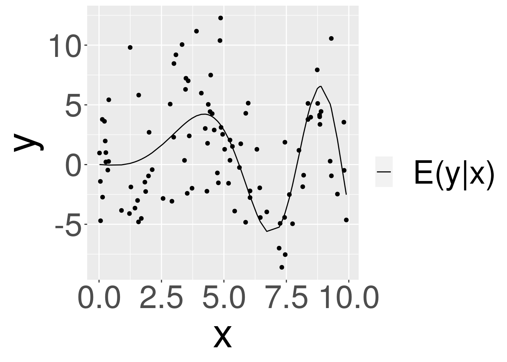
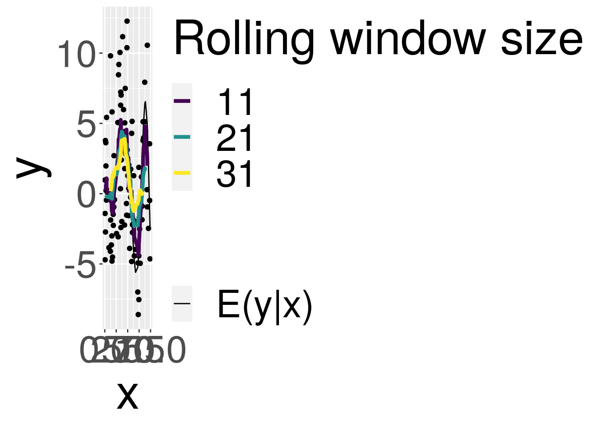
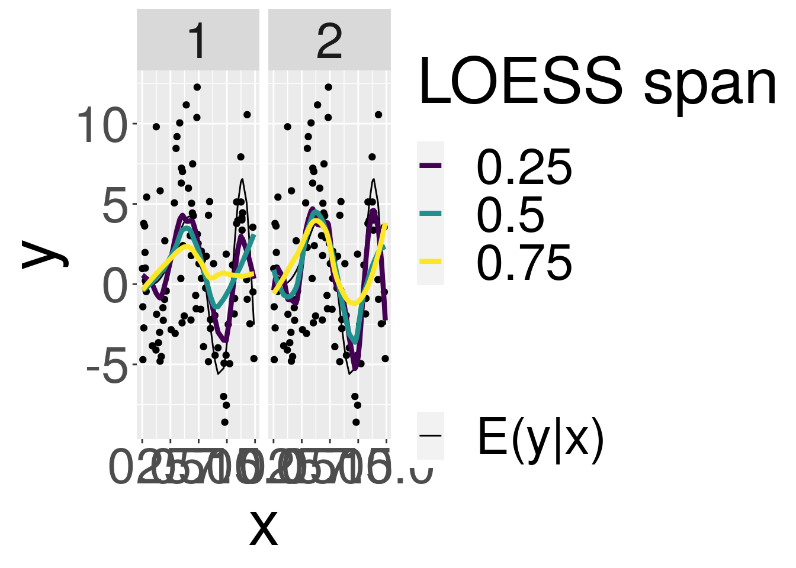
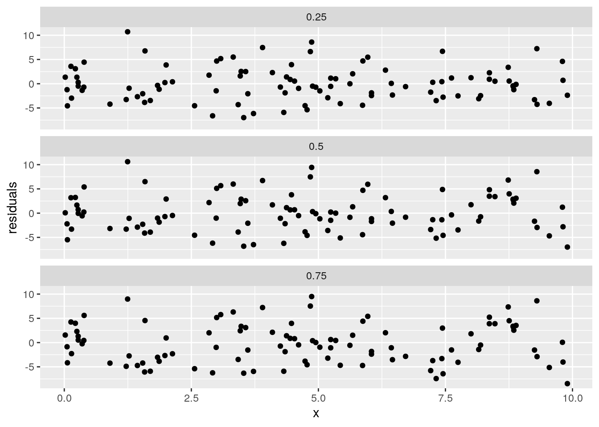
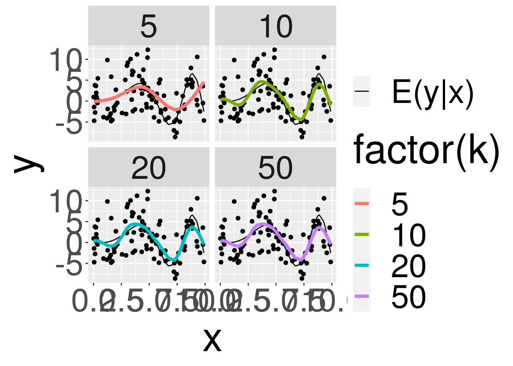

The aim is to explore alternative scatterplot smoothers and their properties and proper use.
Let us generate y = f(x) with a complex non-monotonic function with gaussian error.
n_draws <- 100
f <- function(x) {3 * sin(0.1 * x ^ 2) * log(x)}
x <- runif(n_draws, 0, 10)
y <- f(x)
y_err <- y + rnorm(length(y), 0, 4)
df <- data.frame(x, y, y_err) %>%
arrange(x)plot_data <- function() {
ggplot(df, aes(x = x, y = y_err)) +
geom_point() +
geom_line(aes(y = y, linetype = "E(y|x)")) +
ylab("y") +
scale_linetype("") +
theme(text = element_text(size = 40))
}
plot_data()
The task is to use a scatterplot smoother to estimate E(y | x).
Points of interest:
1- Which scatterplot smoothers can be used ? What are the differences in the result ? How does the estimate behave on the edges ? 2- Which options do the smoothers have, and how do this affect the estimate ?
?ggplot2::geom_smoothI will look into three scatter plots smoothers: rolling mean, loess and gam
rolling_mean <- function(y, n) {
as.vector(stats::filter(y, rep(1 / n, n), sides = 2))
}
df_rm <- df %>%
mutate(
y_rm1 = rolling_mean(y_err, 11),
y_rm2 = rolling_mean(y_err, 21),
y_rm3 = rolling_mean(y_err, 31)
) %>%
tidyr::pivot_longer(
cols = tidyselect::starts_with("y_rm"),
names_to = "rm_window",
values_to = "y_rm"
) %>%
mutate(rm_window = case_when(
rm_window == "y_rm1" ~ 11,
rm_window == "y_rm2" ~ 21,
rm_window == "y_rm3" ~ 31
)
)plot_data() +
ggplot2::geom_line(
data = df_rm,
aes(x = x, y = y_rm, color = factor(rm_window)),
size = 1.5
) +
scale_color_viridis_d("Rolling window size")## Warning: Removed 60 row(s) containing
## missing values (geom_path).
The rolling mean produces very uneven curves (as the data at hand are not autocorrelated), and are not well defined for edge values.
Augmenting the rolling window size, makes it somewhat less bumpy, but accentuates the undefined edges and fails to follow the original function.
Loess (or equivalently Lowess), which stands for “locally weighted scatterplot smoothing”, is a smoothing method that fits simple models to localized subsets of the data (neighborhoods) to perform a non-parametric regression.
?stats::loessHighlights: * neighbourhood of x, weighted by their distance from x […], tricubic weighting * The size of the neighbourhood is controlled by […] ‘span’ * degree: the degree of the polynomials to be used * The memory usage of this implementation of ‘loess’ is roughly quadratic in the number of points, with 1000 points taking about 10Mb.
loess_pred <- function(df, spans, degrees) {
parameters = expand.grid(span = spans, degree = degrees)
loess_obj <- purrr::pmap(
parameters,
function(span, degree) { loess(y_err ~ x, data = df, span = span, degree = degree) }
)
names(loess_obj) <- paste("y_loess", parameters[,1], parameters[,2], sep = "_")
res <- purrr::map_dfc(
loess_obj,
~ predict(., df)
)
return(res)
}
loess_preds <- loess_pred(df, c(0.25, 0.5, 0.75), c(1, 2))
df_loess <- df %>%
bind_cols(loess_preds) %>%
tidyr::pivot_longer(
tidyselect::starts_with("y_loess"),
names_to = "parameters",
values_to = "y_loess"
) %>%
tidyr::separate(
parameters,
into = c(NA, NA, "span", "degree"),
sep = "_",
convert = TRUE
)plot_data() +
geom_line(
data = df_loess,
mapping = aes(x = x, y = y_loess, color = factor(span)),
size = 1.5
) +
facet_wrap(vars(degree)) +
scale_color_viridis_d("LOESS span")
We observe that: * As intuitively expected, the lower the span, and the higher the degree, the more the estimate fits local variations. * The degree 1 loess is somewhat more bumpy.
The default Loess operated with geom_smooth() is the yellow right curve. We see that it looks not optimal, a span of 0.5 with a degree 2 estimate seems more appropriate. So the span needs to be adapted to the locality of the variations: it can be seen to the naked eye that the yellow curve does not fit the data well.
Smaller spans (for instance the purple curve on the right) induce additional wiggly-ness.
It can be further highlighted by looking at the residuals, which should be the less possibly auto-correlated.
df_loess <- df_loess %>%
filter(degree == 2) %>%
mutate(residuals = y_err - y_loess)
ggplot(df_loess, aes(x = x, y = residuals)) +
geom_point() +
facet_wrap(vars(span), ncol = 1)
Looking at the third facet, it is clear that there is autocorrelation, especially between x = 5 and x = 10. I do not see a way to distinguish a better option between the two upper panels based on this plot, so let us assume that the greater the span without visible autocrelation, the less risk of overfitting the data.
To conclude: * When doing smoothing with loess, it is important to verify the fit to the data for several spans; * A residuals check can be performed to identify too big spans, but will not recognize too small spans. The great wiggly-ness of the estimate will help to recognize the latter.
We will explore only the default gam of ggplot2::stat_smooth(). Documentation specifies that it runs with formula = y ~ s(x, bs = "cs").
require(mgcv)
?formula.gam
?smooth.terms
?cubic.regression.splineInteresting bits: * s function in the formula is for “smooth terms” * If ‘k’ is not specified then basis specific defaults are used. Note that these defaults are essentially arbitrary, and it is important to check that they are not so small that they cause oversmoothing (too large just slows down computation). * bs = "cs" refers to: “A shrinkage version of cubic regression splines”. For which: Default ‘k’ is 10.
Lots of interesting stuff in “smooth.terms”, we will keep them for other exploration (for instance “cyclic cubic regression splines”)
Let us visualise the result:
gam_pred <- function(df, k) {
gam_obj <- purrr::map(
k,
~ mgcv::gam(y_err ~ s(x, bs = "cs", k = .), data = df)
)
names(gam_obj) <- paste("y_gam", k, sep = "_")
res <- purrr::map_dfc(
gam_obj,
~ predict(., df)
)
return(res)
}
gam_preds <- gam_pred(df, k = c(5, 10, 20, 50))
df_gam <- df %>%
bind_cols(gam_preds) %>%
tidyr::pivot_longer(
tidyselect::starts_with("y_gam"),
names_to = "parameters",
values_to = "y_gam"
) %>%
tidyr::separate(
parameters,
into = c(NA, NA, "k"),
sep = "_",
convert = TRUE
)plot_data() +
geom_line(
data = df_gam,
mapping = aes(x = x, y = y_gam, color = factor(k)),
size = 1.5
) +
facet_wrap(vars(k))
As specified in the documentation, k = 5 leads to severe oversmoothing as it estimates a straight line. k = 10 gives the best result so far, but the data has been exactly generated according to a model with gaussian noise, so it started with an edge. Again, as specified in the documentation, higher values of k do not substantially change the estimate !